Anthropic
Anthropic Engineering
Anthropic 엔지니어링 팀이 공개하는 에이전트·하네스·평가 관련 글

에이전트 메모리의 구성 요소
Claude가 경험에서 배우려면, 다음에 무엇이 필요할지 알기 전에 무엇을 기억할 가치가 있는지 먼저 판단해야 합니다. '드리밍(dreaming)'이 Claude의 메모리 정리와 실수 교정을 어떻게 돕는지 소개합니다.
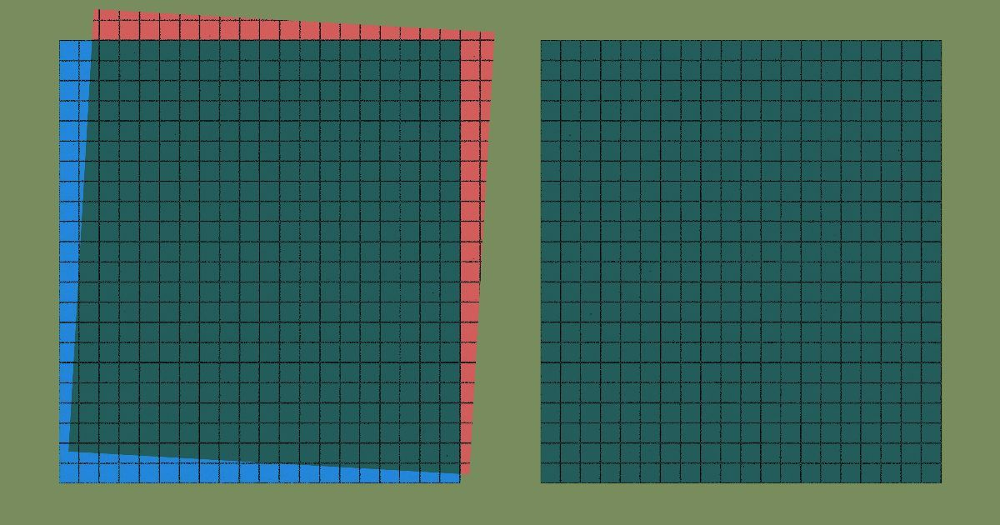
강력한 안전성 평가 구축
에이전트 메모리의 구성 요소

Anthropic의 소스 컨트롤 재설계
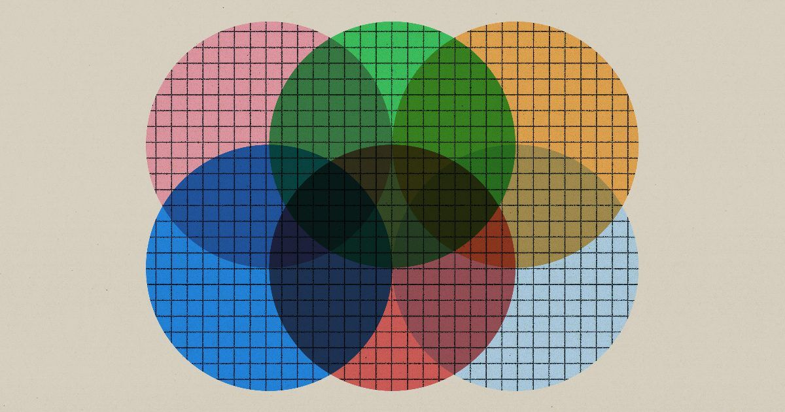
Claude 제품 전반의 격리 방식
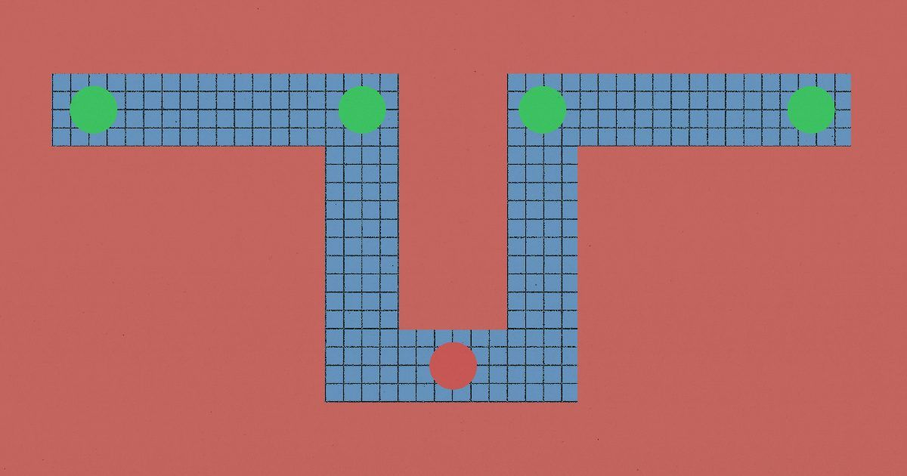
최근 Claude Code 품질 문제 보고에 대한 경과 보고
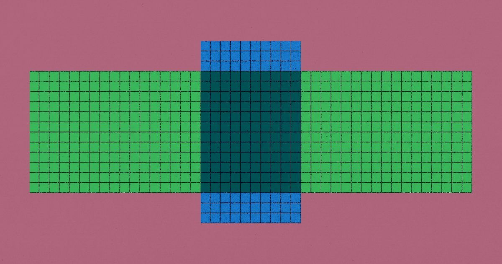
Managed Agents 확장: 두뇌와 손의 분리
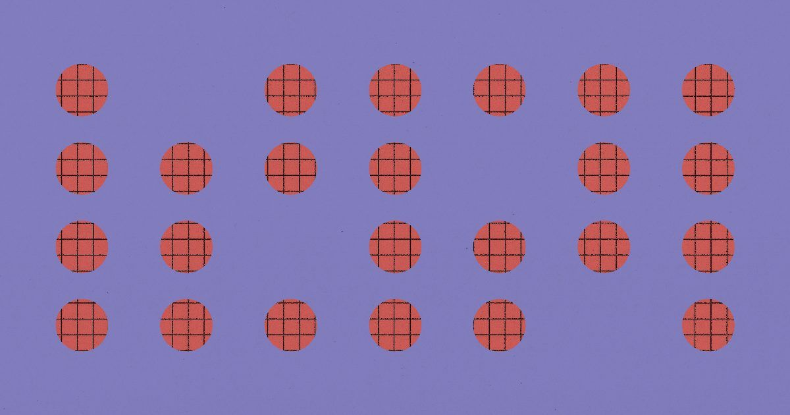
Claude Code 자동 모드 구축기: 권한 확인을 건너뛰는 더 안전한 방법
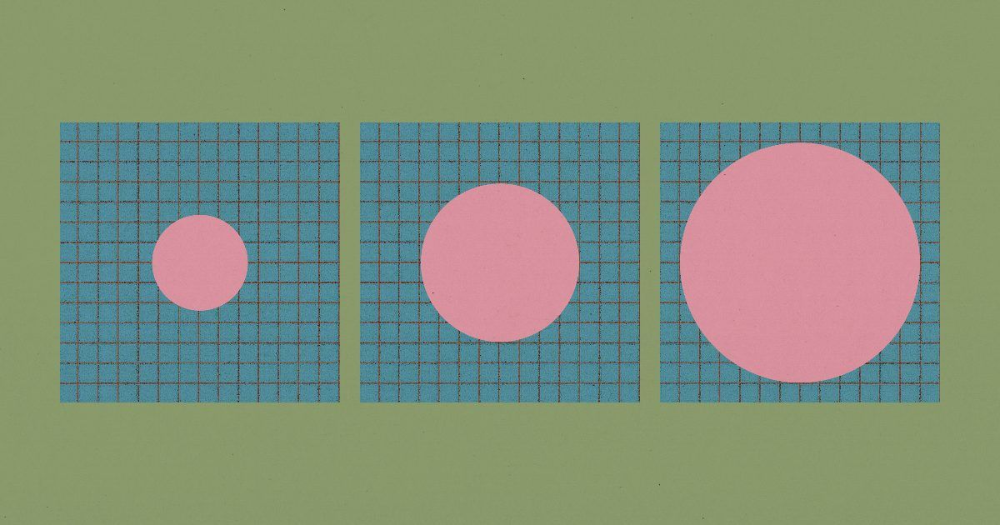
장기 실행 애플리케이션 개발을 위한 하네스 설계
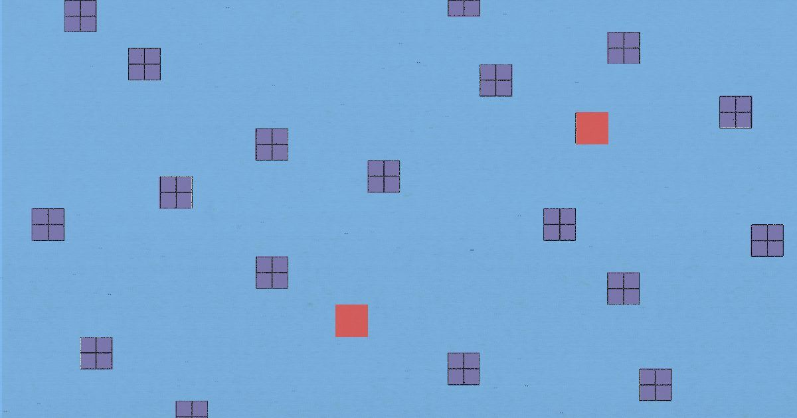
Claude Opus 4.6의 BrowseComp 성능에서 나타난 평가 인식(Eval Awareness)
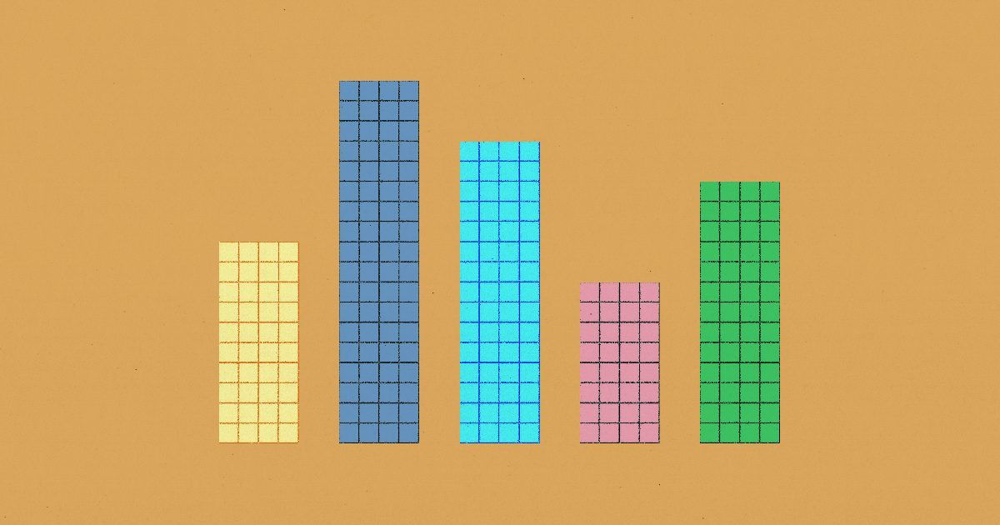
에이전트 코딩 평가에서 인프라 노이즈 정량화
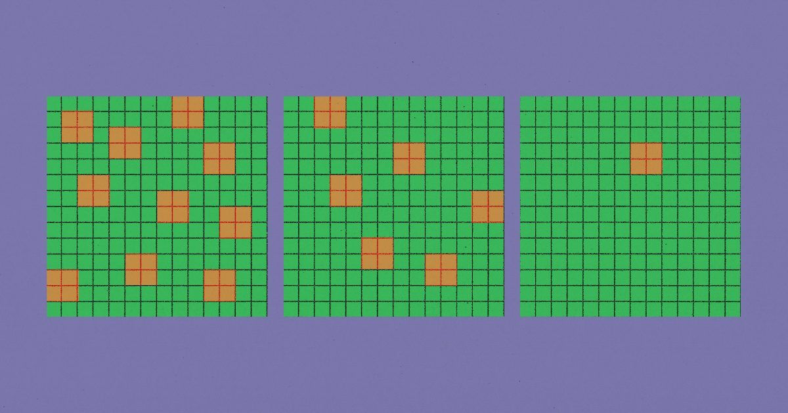
병렬 Claude 팀으로 C 컴파일러 만들기
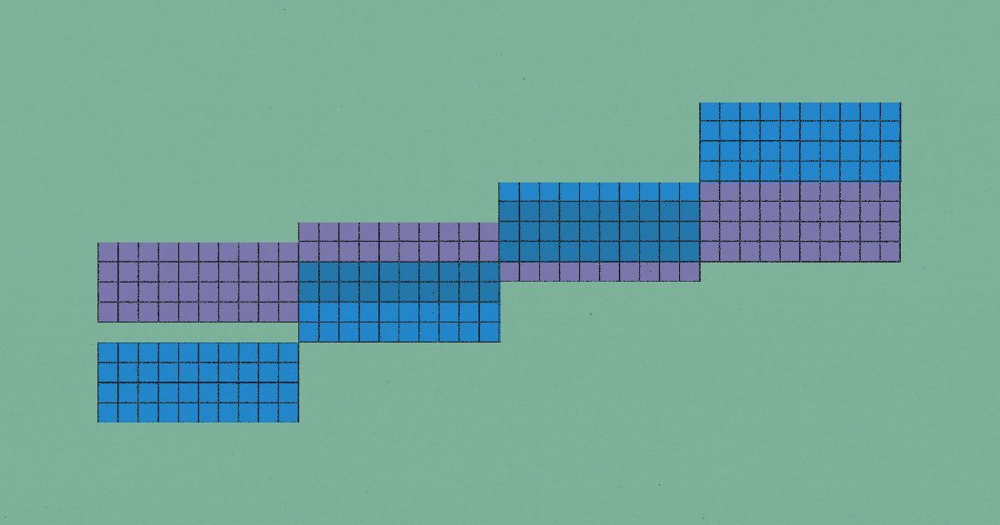
AI에 강한 기술 평가 설계하기
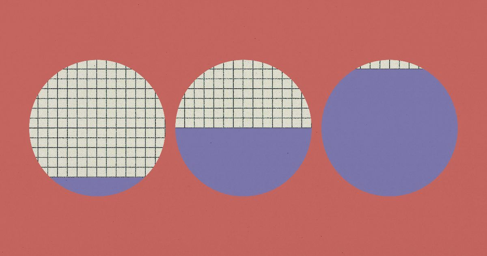